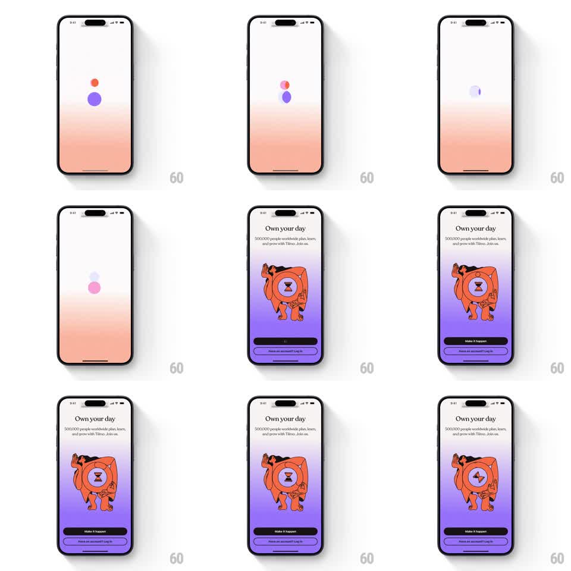

Media
Frame-by-frame

Rebuild this animation 1:1: Tiimo's splash - liquid circles morph and drift on a pastel field, then dissolve seamlessly into the onboarding screen's staggered text and illustration.

Rebuild this animation 1:1: Tiimo's splash - liquid circles morph and drift on a pastel field, then dissolve seamlessly into the onboarding screen's staggered text and illustration. ## Integration Integration: stack-agnostic spec - springs given as stiffness/damping, timed motions as duration + curve; map every value to your framework and animation library of choice. ## Scene Opens on a soft pastel field with 3-4 colored circles that wobble like liquid, drift, and coalesce around the center. The circles dissolve into the first onboarding screen: illustration rises, headline and subline stagger in, and a CTA slides up. ## Motion spec Pattern: liquid morph dissolve into staggered reveal. - Each circle is a blob - its border-radius values animate continuously (~3s period, phase-offset per circle) so edges flow like liquid. - Circles drift slowly (20-40px excursions, ease-in-out, offset periods) and merge when they meet: approaching blobs bulge toward each other before combining into a larger blob. - At ~1.8s the unified blob contracts to center and dissolves (scale down + fade, 400ms, ease-in) as the onboarding screen fades up beneath it. - The illustration pops in (scale 0.92 to 1, spring ~350/22), the headline fades up 100ms later (250ms), the subline 80ms after that, and the CTA slides up last (spring ~320/26). - The pastel background carries over unchanged - the transition is content-only. ## Calibration - Liquid wobble must be continuous from frame one; a static circle that starts morphing reads as a glitch. - The dissolve point lines up the blob's center with where the illustration lands - the eye should follow one object. ## Reduced motion Simple fade from splash mark to onboarding screen. ## Don't miss - Blob edges are smooth, never polygonal - radius animation, not vertex steps. - The CTA is the last thing to arrive; the screen feels empty until it does, by design.